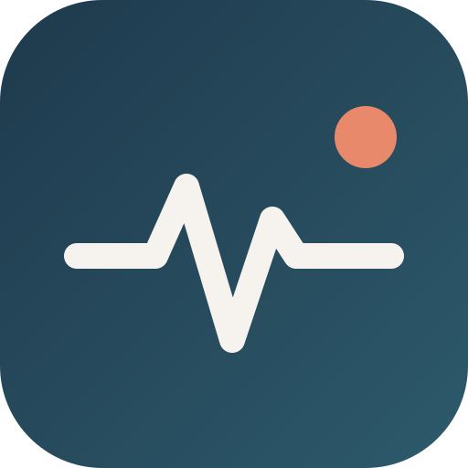

Körper und Kosmos · DR Lab
HumanSpark liest deinen Körper und übersetzt ihn in eine kurze Sprache für die KI.
Deine Daten bleiben auf deinem Handy. HumanSpark ist kein medizinisches Gerät und stellt keine Diagnosen.
Lege die Fingerkuppe sanft auf die Rückkamera und halte still. Die Messung dauert etwa 30 Sekunden.
Die Taschenlampe lässt sich im iPhone-Browser nicht einschalten. Miss deshalb bei hellem Licht (z. B. am Fenster oder unter einer Lampe), damit der Finger rot durchleuchtet wird.
Sprich ein paar Sätze, so wie es gerade ist. HumanSpark macht daraus einen Eintrag und eine kurze Kodierung.
Alles liegt nur in diesem Browser auf deinem Handy. Exportieren kannst du es selbst, z. B. für dich oder deine Therapeutin.